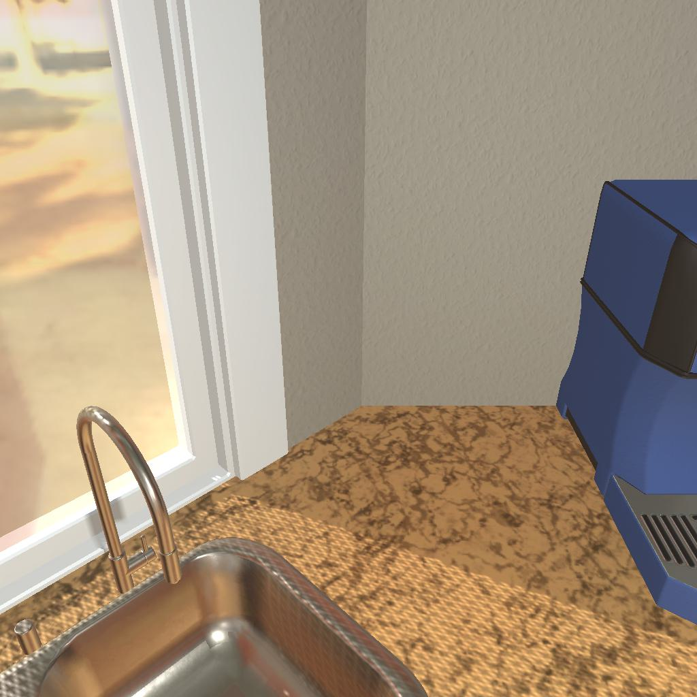
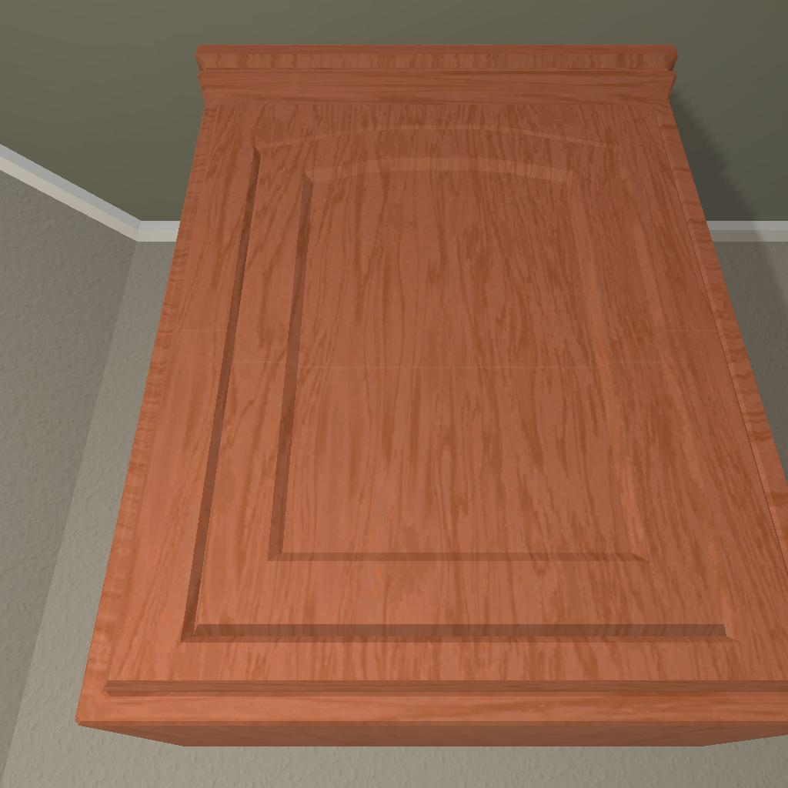

---------------------------------------------------------task: 15---------------------------------------------------------
--------------------------------------------------------------------------------------------------------------------------------------------------------------------
--------------------------------------------------------------------------------------------------------------------------------------------------------------------
Step:--------------------------------------------------------------------------1-------------------------------------------------------------------------------
----------------------------------------
VLM Prompt:
Image1:
Image2:
**Instruction**
1. Analyze the provided images to identify all visible household objects and compare the difference between images (e.h. whether the object is opened or not and taken on hand or not), focusing on those relevant to the task description "cool some mug and put it in coffeemachine."
2. Use the analysis of images and the task hint "The agent must find an object of the desired type, pick it up, go to a fridge, cool the object with the fridge, then find the correct location to place it, and put it down there. The agent does not need to use the fridge button or open the fridge to cool the object, and the agent just needs to do action that is "cool the object with the fridge"." to answer the question: what is the most reasonable action in the choices for the task description "cool some mug and put it in coffeemachine"?
3. Decide and write the answer using the template: The answer is: (i): , where i is the real number. If there is no desired object in images, search every place based on **Initial Observation** to find the object. And if no one is exactly correct, choose a similar answer.
**Initial Observation**
You are in the middle of a room. Looking quickly around you, you can see cabinet (1-15), fridge (1), countertop (1-4), drawer (1-4), microwave (1), toaster (1), coffeemachine (1), garbagecan (1), sink (1), stoveburner (1-3), sinkbasin (1)
**Answer Choices**
(1): go to cabinet 2
(2): go to cabinet 3
(3): go to fridge 1
(4): go to countertop 1
(5): go to cabinet 4
(6): go to cabinet 5
(7): go to cabinet 6
(8): go to cabinet 7
(9): go to drawer 1
(10): go to drawer 2
(11): go to cabinet 8
(12): go to drawer 3
(13): go to cabinet 9
(14): go to cabinet 10
(15): go to drawer 4
(16): go to microwave 1
(17): go to cabinet 11
(18): go to toaster 1
(19): go to cabinet 12
(20): go to cabinet 13
(21): go to cabinet 14
(22): go to cabinet 15
(23): go to countertop 2
(24): go to coffeemachine 1
(25): go to garbagecan 1
(26): go to countertop 3
(27): go to countertop 4
(28): go to sink 1
(29): go to stoveburner 1
(30): go to stoveburner 2
(31): go to stoveburner 3
(32): go to sinkbasin 1
(33): open cabinet 1
(34): close cabinet 1
(35): examine cabinet 1
**Answer**
Let's think step by step by following the instructions.
----------------------------------------
----------------------------------------
Original Response:
Image Analysis:
- In Image1, we can see part of a countertop with a sink and what appears to be a coffeemachine on the right side. There are no mugs visible in this image.
- In Image2, we see the front of a cabinet that is closed. No objects are visible inside or outside the cabinet.
Task Analysis:
Since the task is to "cool some mug and put it in coffeemachine," we need to find a mug, cool it in the fridge, and then place it in the coffeemachine.
Based on the Initial Observation, we know there are multiple cabinets, a fridge, countertops, drawers, and other appliances. Mugs are typically found in cabinets or on countertops.
Answer Choices Analysis:
Since no mug is visible on the countertop in Image1, we would need to look for a mug in the cabinets or drawers. The fridge is also mentioned in the task, but since we need to find a mug first, we should not go to the fridge yet.
The most reasonable actions from the choices would be to look inside a cabinet or a drawer where a mug might be stored. Therefore, we can eliminate actions related to appliances and locations that wouldn't typically contain a mug (like the garbagecan or stoveburner).
Based on this analysis, the most reasonable action would be to open a cabinet to search for a mug. Since cabinet 1 is the first cabinet, it's a logical place to start. However, since the action "open cabinet 1" is not an option, we must choose the action to examine cabinet 1, which would imply looking at it and potentially opening it to find a mug.
The answer is: (35): examine cabinet 1.
----------------------------------------
----------------------------------------
>>> Refine Original VLM Response and Get Pure Action: examine cabinet 1
----------------------------------------
-----------------------------------------------------------------
Running time: 16.383484601974487 seconds
Total Money: 6.813360000000004
-----------------------------------------------------------------
-----------------------------------------------------------------
Text Observation:
-----------------------------------------------------------------
UNSUCCEED